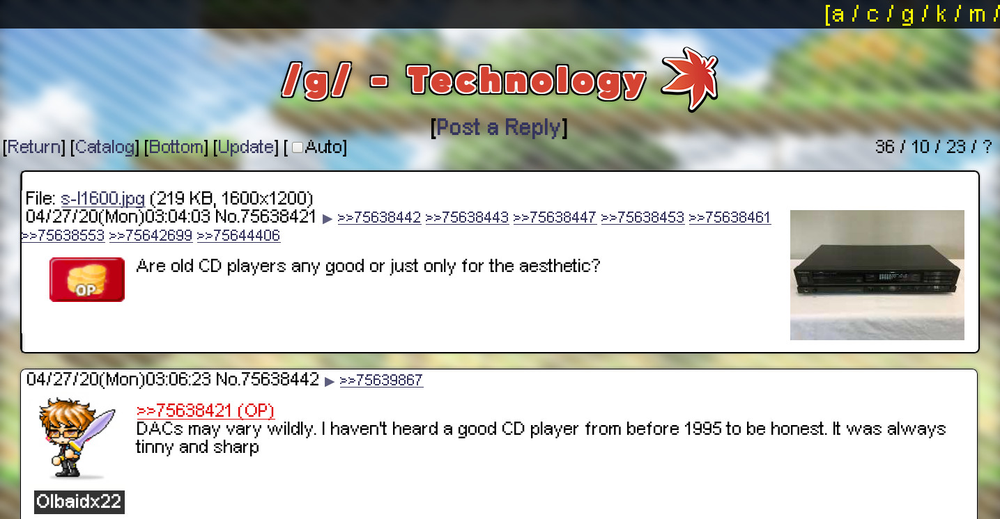
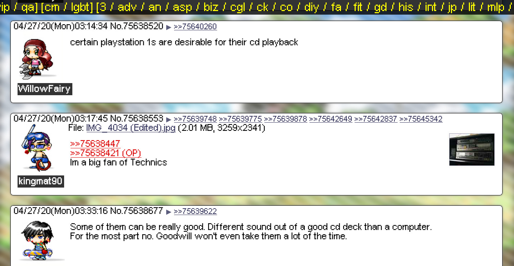

MapleChannel.css
Last updated: 04/27/20
MapleChannel.css is a pure CSS reskin of 4chan into a maplestory themed website. It works by changing the styles within the User Style Sheet for your browser, and only uses CSS to change the styles (it doesn't use any JavaScript or external web requests). Here's an example of a 4chan board after adding MappleChannel to your User Style Sheet:


Download
Click this link to download: MapleChannel.7z
Installation
Installation methods will differ on each browser. On Firefox:
- Type about:config in the URL bar
- In the page that opens, click to void warrenty
- Right click the page, and click New
-
Add the following Key/Value pair to enable user style sheets:
- Key->toolkit.legacyUserProfileCustomizations.stylesheets
- Value->true
- Now type about:support in the URL bar
- On the page that loads, click the Open Profile button
- In the folder that opens up, create a folder called chrome
- Paste the downloaded userContent.css from the MapleChannel.7z file
- Restart your browser
Now check out 4chan and the new styles will be applied. If you ever want to disable the styles, simply set the above key/value pair to false and restart the browser.